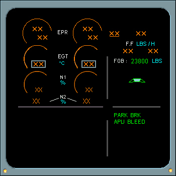

Engine Warning and System Displays
Engine Warning Display Prior to Start
The flight management and guidance computer (FMGC) calculates EPR values for all engine operating regions when the auto thrust system is engaged. The FMGC also computes maximum EPR limits in the event of a FADEC failure.
Engine indications are displayed by the electronic centralized aircraft monitoring system (ECAM). The upper ECAM provides engine/warning displays (E/WD) and the lower ECAM provides system/status displays (S/D).
|  |